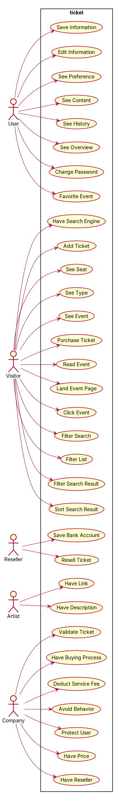
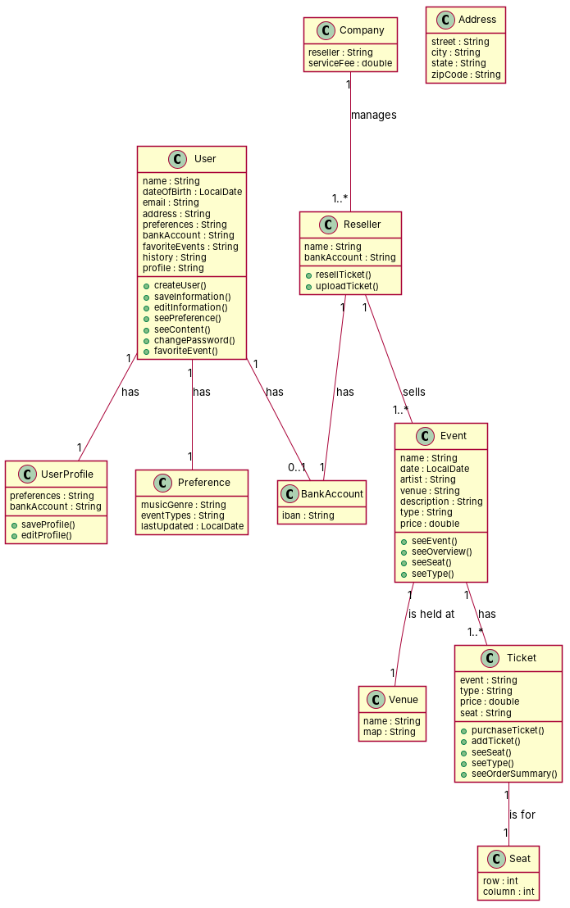

← all cases
D1/ticket — model qwen, condition B, run 1
1. Requirements (input)
R1: As a user, I want to save my personal information (i.e., name, date of birth, email, address, and preferences) so that I don't have to repeat this process with every ticket purchase.
R2: As a user, I want to save my payment details so that I don't have to fill these details in every time.
R3: As a user, I want to fill out a short survey about my preferences in (music) genre and event types so that I can receive personalized content.
R4: As a user, I want to see personalized content (e.g., recommended events) based on my user profile to quickly see events I am interested in.
R5: As a user, I want to see and edit my preferences so that my information does not become outdated.
R6: As a user, I want to be able to change my password so that I can keep my account information safe.
R7: As a user, I want to be able to edit my personal information (e.g., address) so that I can update it when needed.
R8: As a user, I want to see a history of previous ticket orders, so that I can easily retrieve tickets and additional information when needed.
R9: As a user, I want to see an overview of upcoming events for which I bought a ticket, so that I can easily find this information when needed.
R10: As a user, I want to find my list of favorited artists and events under my profile, so that I can easily find them back.
R11: As a visitor, I want to read about the event (e.g., location, date, and artist information), so that I can decide whether to buy a ticket.
R12: As a visitor, I want to be able to buy tickets directly from the event page, so that the purchasing process is shortened.
R13: As a reseller, I want to be able to sell my tickets directly from the event page, so that the reselling process is shortened.
R14: As a (single-time) visitor, I want to buy a ticket as a guest, so that the overall purchase progress is shorter.
R15: As a guest (i.e., single-time user), I want to only fill in my name and email when buying a ticket so that the process is faster than creating an account.
R16: As a guest, I want to not fill in all my information to buy a ticket, so that I can avoid unnecessarily sharing my personal data.
R17: As a guest, I can use the platform the same way as users looking to buy a ticket, so that I am not forced into registering.
R18: As a visitor, I want to purchase a ticket in an easy and short process, so that I can avoid any complications during the process.
R19: As a visitor, I want to see events with available tickets so that I can buy the tickets.
R20: As a visitor, I want to be able to buy multiple tickets for one event in one purchase so that I can buy tickets for me and whomever I go with.
R21: As a visitor, I want to see available seats at the event, so that I can decide which one to buy.
R22: As a visitor, I want to see the available seats in a map of the venue so that I can pick the right seating place for during the event.
R23: As a visitor, I want to see the types of tickets (e.g., normal, premium, gold tickets) once I select the event, so that I can choose which type I want to buy.
R24: As a visitor, I want to add tickets to the shopping cart, so that I can buy tickets.
R25: As a visitor, I want to see my order summary, so that I can make sure that I buy the correct ticket(s).
R26: As a visitor, I want to see a list of payment methods. so that I can pay for my tickets.
R27: As a company, I want to have the overall buying process as intuitive and quick as possible so that we can attract (and retain) visitors to use our platform.
R28: As a visitor, I want to get a list of events as search results, so that I can select the desired event.
R29: As a visitor, I want to be able to land on the event page when clicking on a search result so that I can visit the page I want.
R30: As a visitor, I want to have the search engine non-case sensitive and punctuation sensitive so that I can still find the desired event when I misspell the name.
R31: As a visitor, I want to be able to sort my search results by date so that I can see which events are up first.
R32: As a visitor, I want to be able to filter my search by price so that I can only see tickets within my price range.
R33: As a visitor, I want to be able to filter my search results by venue, so that I can easily find the event I want to go to.
R34: As a visitor, I want to be able to filter a list of events by genre, so that I don't have to see events I'm not interested in.
R35: As a company, I want to have the minimum price for reselling a ticket at 5 cents so that I can receive a service fee.
R36: As a company, I want to have resellers sell only digital tickets, so that the tickets can be validated automatically.
R37: As a company, I want to validate tickets, so that I can ensure visitors a trustworthy platform.
R38: As a company, I want to deduct a service fee of 3% from the total price set by the reseller so that the reselling platform is a financially beneficial addition to the business.
R39: As a company, I want to avoid fraudulent behavior on the reselling platform, so that visitors gain trust in the platform.
R40: As a company, I want to protect users from online fraud, so that I can avoid the failure of the reselling platform.
R41: As a reseller, I want to be able to resell tickets directly from the event page so that the reselling process is shortened.
R42: As a reseller, I can upload my digital ticket from my local device, so that I can offer it to other users.
R43: As a reseller, I can set any price above 5 cents for the ticket I'm selling.
R44: As a reseller, I can add a short description of the event so that the other (buying) users know what type of ticket, and for which event, I'm selling.
R45: As a reseller, I want to save my bank account (IBAN number) in my user profile, so that I can receive the money for the tickets directly to my bank account.
R46: As a visitor, I want to see upcoming events in a calendar-type view so that I can compare it to my own planner.
R47: As a visitor, I want to see popular, upcoming events so that I can stay updated about interesting events.
R48: As a visitor, I want to click on an event shown on the homepage and be directed to the event page, so that I don't have to search for it.
R49: As an artist, I want to find information about my events on the designated event page so that visitors can read about my event and consider buying tickets.
R50: As an artist, I want to have a link to my website on the event page so that fans can find out more about me.
R51: As an artist, I want to have a link to my social media on the event page, so that fans can follow me for regular updates.
R52: As an artist, I want to have a description of myself and my upcoming event (or tour) to be shown on my event page so that visitors can inform themselves about my show.
R53: As a user, I want to favorite events or artists on the related event page, so that I can easily find it back.
R54: As an artist, I want to have a link to music platforms (e.g., YouTube, Spotify, Apple Music), so that visitors buying tickets for my show can stream my music.
2. Result 1 → Result 2 (ambiguity removal)
Red, struck-through: removed by ambiguity removal; green: added.
| actors (8 → 8) |
|---|
| artist |
| company |
| guest |
| guest i e single time user |
| reseller |
| single time visitor |
| user |
| visitor |
| classes (28 → 28) |
|---|
| Address |
| Artist |
| BankAccount |
| Cent |
| Company |
| Content |
| Date |
| Event |
| EventPage |
| Fan |
| Guest |
| GuestIESingleTimeUser |
| Link |
| Platform |
| Preference |
| Process |
| Reseller |
| ResellingProcess |
| SearchResult |
| Seat |
| ServiceFee |
| Show |
| SingleTimeVisitor |
| Ticket |
| User |
| UserProfile |
| Venue |
| Visitor |
| attributes (3 → 3) |
|---|
| Event.description |
| Platform.failure |
| Venue.map |
3. Ambiguity tags
| id | req | type | cue | status | readings / explanation |
|---|
| A7 | R7 | referential | it | resolved | personal information includes address; personal information does not include address
The use of 'it' in R7 could refer to 'personal information' or 'address' from R1, making the scope ambiguous. |
| A11 | R10 | referential | them | resolved | favorited artists and events; favorited artists only
The use of 'them' in R10 could refer to 'artists and events' or just 'artists' from R12, making the scope ambiguous. |
4. Diagrams generated from the shared model
usecase diagram
class diagram
5. Code skeleton (Python; Java in code/java/)
"""Code skeleton generated from the shared model of D1/ticket.
Every class and method records the requirement(s) it traces to."""
from __future__ import annotations
import dataclasses as _dc
import enum as _enum
import typing as _t
@_dc.dataclass
class User:
"""Source: R1, R5, R6, R7, R8, R9, R40, R43"""
name: _t.Optional[str] = None
dateOfBirth: _t.Optional[str] = None
email: _t.Optional[str] = None
address: _t.Optional[str] = None
preferences: _t.Optional[str] = None
bankAccount: _t.Optional[str] = None
favoriteEvents: _t.Optional[str] = None
history: _t.Optional[str] = None
profile: _t.Optional[str] = None
userProfile: _t.Optional["UserProfile"] = None
preference: _t.Optional["Preference"] = None
def createUser(self) -> None:
"""Operation."""
raise NotImplementedError
def saveInformation(self) -> None:
"""Realizes UC1 "Save Information" (R1)."""
raise NotImplementedError
def editInformation(self) -> None:
"""Realizes UC2 "Edit Information" (R7)."""
raise NotImplementedError
def seePreference(self) -> None:
"""Realizes UC3 "See Preference" (R5)."""
raise NotImplementedError
def seeContent(self) -> None:
"""Realizes UC4 "See Content" (R4)."""
raise NotImplementedError
def changePassword(self) -> None:
"""Realizes UC31 "Change Password" (R6)."""
raise NotImplementedError
def favoriteEvent(self) -> None:
"""Realizes UC32 "Favorite Event" (R53)."""
raise NotImplementedError
@_dc.dataclass
class UserProfile:
"""Source: R1, R3, R5, R43"""
preferences: _t.Optional[str] = None
bankAccount: _t.Optional[str] = None
def saveProfile(self) -> None:
"""Realizes UC1 "Save Information" (R1)."""
raise NotImplementedError
def editProfile(self) -> None:
"""Realizes UC2 "Edit Information" (R7)."""
raise NotImplementedError
@_dc.dataclass
class Address:
"""Source: R1"""
street: _t.Optional[str] = None
city: _t.Optional[str] = None
state: _t.Optional[str] = None
zipCode: _t.Optional[str] = None
@_dc.dataclass
class Preference:
"""Source: R3, R5"""
musicGenre: _t.Optional[str] = None
eventTypes: _t.Optional[str] = None
lastUpdated: _t.Optional[str] = None
@_dc.dataclass
class BankAccount:
"""Source: R42, R45"""
iban: _t.Optional[str] = None
@_dc.dataclass
class Event:
"""Source: R11, R19, R23, R28, R30, R31, R32, R33, R46, R47, R49, R52"""
name: _t.Optional[str] = None
date: _t.Optional[str] = None
artist: _t.Optional[str] = None
venue: _t.Optional[str] = None
description: _t.Optional[str] = None
type: _t.Optional[str] = None
price: _t.Optional[float] = None
tickets: _t.List["Ticket"] = _dc.field(default_factory=list)
def seeEvent(self) -> None:
"""Realizes UC7 "See Event" (R11, R19, R46, R47)."""
raise NotImplementedError
def seeOverview(self) -> None:
"""Realizes UC6 "See Overview" (R9)."""
raise NotImplementedError
def seeSeat(self) -> None:
"""Realizes UC29 "See Seat" (R21, R22)."""
raise NotImplementedError
def seeType(self) -> None:
"""Realizes UC30 "See Type" (R23)."""
raise NotImplementedError
@_dc.dataclass
class Venue:
"""Source: R11, R28, R30, R31, R32, R33, R46, R47"""
name: _t.Optional[str] = None
map: _t.Optional[str] = None
@_dc.dataclass
class Ticket:
"""Source: R12, R14, R18, R20, R24, R25, R26, R34, R35, R36, R37, R38, R39, R41, R42, R43, R44, R48, R50, R51, R53"""
event: _t.Optional[str] = None
type: _t.Optional[str] = None
price: _t.Optional[float] = None
seat: _t.Optional[str] = None
def purchaseTicket(self) -> None:
"""Realizes UC8 "Purchase Ticket" (R12, R14, R20, R24, R25, R26)."""
raise NotImplementedError
def addTicket(self) -> None:
"""Realizes UC28 "Add Ticket" (R24)."""
raise NotImplementedError
def seeSeat(self) -> None:
"""Realizes UC29 "See Seat" (R21, R22)."""
raise NotImplementedError
def seeType(self) -> None:
"""Realizes UC30 "See Type" (R23)."""
raise NotImplementedError
def seeOrderSummary(self) -> None:
"""Operation."""
raise NotImplementedError
@_dc.dataclass
class Seat:
"""Source: R21, R22, R28, R30, R31, R32, R33, R46, R47, R52"""
row: _t.Optional[int] = None
column: _t.Optional[int] = None
@_dc.dataclass
class Company:
"""Source: R27, R35, R36, R37, R38, R39, R40, R41, R42, R43, R44, R45"""
reseller: _t.Optional[str] = None
serviceFee: _t.Optional[float] = None
resellers: _t.List["Reseller"] = _dc.field(default_factory=list)
@_dc.dataclass
class Reseller:
"""Source: R41, R42, R43, R44, R45"""
name: _t.Optional[str] = None
bankAccount: _t.Optional[str] = None
events: _t.List["Event"] = _dc.field(default_factory=list)
def resellTicket(self) -> None:
"""Realizes UC26 "Resell Ticket" (R41)."""
raise NotImplementedError
def uploadTicket(self) -> None:
"""Operation."""
raise NotImplementedError
6. Validation, checks and traceability
| python_compiles | True |
|---|
| java_compiles | True |
|---|
| attribute_mismatches | 0 |
|---|
| method_mismatches | 0 |
|---|
| use_cases | 32 |
|---|
| use_cases_without_actor | 0 |
|---|
| use_cases_without_method | 19 |
|---|
| actors_without_use_case | 0 |
|---|
| relations_to_unknown_class | 0 |
|---|
| inconsistencies | 19 |
|---|
| inconsistency_rate | 0.3958 |
|---|
| requirement_coverage | 0.9259 |
|---|
| validator fixes | |
|---|
| assumptions for open ambiguities | [] |
|---|
7. Scores against the reference
| element | P | R | F1 | TP/FP/FN |
|---|
| classes | 0.462 | 0.6 | 0.522 | 6/7/4 |
| relations | 0.222 | 0.154 | 0.182 | 2/7/11 |
| use_cases_provisional | 0.969 | 0.689 | 0.805 | 31/1/14 |